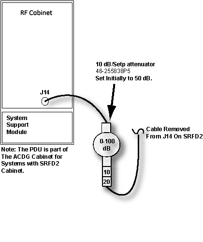
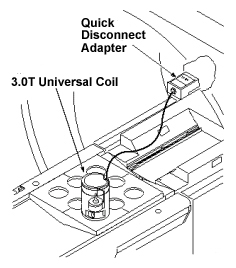
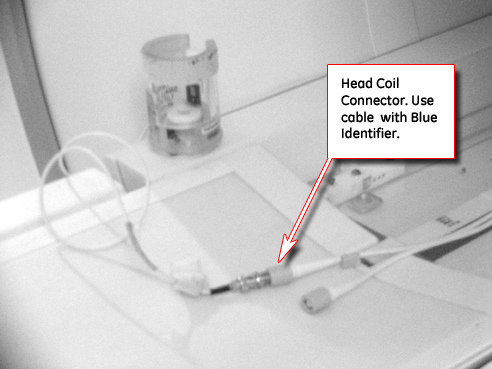
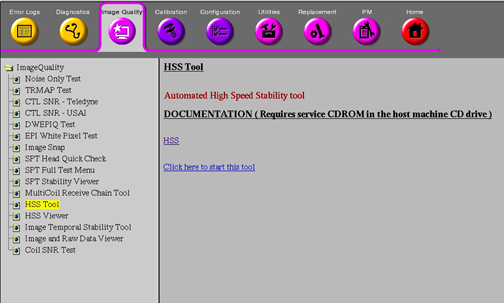
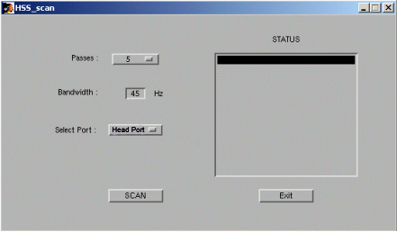
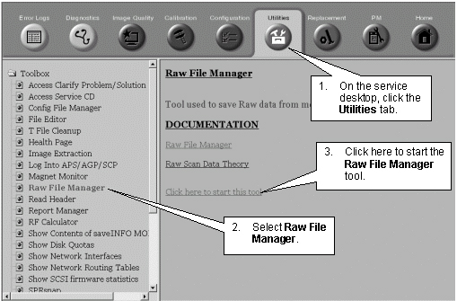

Proprietary to General Electric Company
Direction 5440000, Rev# 5
Signa HDxt Service Methods
Module Version 6.0, Version Date 8/16/10
Proprietary to General Electric Company |
| Required Persons | Preliminary Reqs | Procedure | Finalization |
|---|---|---|---|
| 1 | Not Applicable | Not Applicable | Not Applicable |
The HSS (High Speed Stability) test evaluates the effects of vibration, or other rapid environmental or system phenomena, on the stability of the MRI process, or of the hardware used to receive and process MRI signals. For TwinSpeed, select one of the gradient coils to be used for the tests, and complete it with the same GradMode. For Help with HSS, see the following documents:
| Item | Qty | Effectivity | Part# | Manufacturer | |
|---|---|---|---|---|---|
| Base Plate | 1 | - | 46-320332G1 | - | |
Disable TR Driver Faults by moving switch 2 on the Driver Module to TR Disable. See Illustration 1.
Illustration 1: TR Driver Module

Insert 40 dB of attenuator in between RF Input (J14) and the normal RF in cable.
Disconnect the RF in cable from J14 of the RF amp. Connect the in line 10dB, in line 20dB and 0-10 step attenuator to J14 and the RF Input cable Just removed. See Step .
Illustration 2: Adding Attenuation to RF In

For sites with the old style LPCA, Connect the cable from Universal 3.0T SST RF coil to the Service Coil1 Adapter. See Illustration 3. For sites with the new LPCA, connect the Head Output cable to the Universal SST coil as shown in Illustration 4.
Illustration 3: Coil Placement

For sites with the new LPCA, connect the Head Output cable to the Universal SST coil as shown in Illustration 4.
Illustration 4: Coil Placement

Connect the cable from Universal 3.0T SST RF coil to the Service Coil 1 Adapter.
Illustration 5: 1.5T HSS connection for Test Port

Illustration 6: 3.0T HSS connection for Test Port

| ||||
| SAMPLE MOTION CAN AFFECT HSS OUTPUT. TO ENSURE THE VIAL FITS SNUGLY INTO THE COIL HOUSING, A PIECE OF TAPE CAN BE WRAPPED COMPLETELY AROUND THE VIAL BEFORE PLACING INTO THE HOLDER. | ||||
Insert the 0.25M NiCl2 (green in color) sample vial into the coil.
| NOTE: | Ensure no solution is trapped in the top section of the vial before inserting the vial into the coil. If solution is trapped in the vial top, correct by flicking the vial with your finger to knock the solution to the bottom of the vial. |
Position the base plate at the head end of cradle. Place and lock the coil into the base plate in the corner; then connect the adapter to the head carriage (see Illustration 3).
| NOTE: | Landmark on the center of the base plate (do NOT try to landmark on the HSS coil) |
For 14.x systems, disable the UTNS from counting and notching, at the host computer, by opening a C-shell and typing the following:
mgd_tns -d m=a 0<Enter>
mgd_tns -b m=a 0<Enter>
| NOTE: | For release 15.x and greater, the UTNS is automatically disabled when running HSS. |
At the MR Service Desktop, start HSS Tool as shown in Illustration 7.
Illustration 7: SELECTING HSS TOOL FROM UTILITIES

Select Scan from the HSS GUI. See Illustration 8. Verify that "Passes=5", "Bandwidth=45Hz", and "Select Port=Head or Test", depending on which mode HSS tool is to be run.
Illustration 8: HSS GUI

The prescan and scan will be done automatically. No user scan setup is required. The scan will take a few minutes to complete. If problems exist with Auto-Prescan section of HSS (where Analog Gain [R1] ~ 1, Digital Gain [R2] ~ 14, and TG ~ 70 to 130), change the attenuation on the attenuator and run HSS tool again.
If the problem with the Auto-Prescan persists, manually load HSS protocol by following this procedure:
Go into the scan desktop.
Set up for scan using geservice as Patient ID.
Select [Service] protocols.
Select [Other], scroll down and select [HSS] protocol. Highlight the [HSS] protocol, then click on [Accept].
Select [Save Series].
Right-click on [Research Options], then select [Display CV's]. By CV name, type rfamp_type, and change the Current Value to 2 (or head mode). Then click on [Accept].
Right-click on [Research Options], then select [Download].
Select [Manual Prescan]. The receive signal will be a flat line. Value for R1 should be between 30 and 100. Values for R2 should be between 20 and 60.
If values for R1 and R2 are close to zero, there are issues with the setup. Fix any issue, and verify that proper signal is received prior to proceeding with HSS.
Verify that Transmit Gain (TG) is properly set by selecting [Scan TR] in the Manual Prescan page and decreasing/increasing the TG until maximum signal (R1 and R2 value) is achieved.
If issues persist, remove the HSS phantom and the attenuation that is in series with the RF amp and connect the head coil. Set up the HSS protocol as noted above. Perform Auto Prescan. Nominal values are noted below.
Analog Gain (R1) ~ 1
Digital Gain (R2) ~ 14
TG ~ 70 to 130
R1 (from manual prescan page) = 42
R2 (from manual prescan page) = 42
Perform HSS Scan by clicking on Scan Button. This will generate the HSS result file.
After the scan is finished, the HSS Viewer will automatically start or can be started from CSD to view HSS result files. Please see theViewing Results for instructions concerning how to display the results.
Restore the connections at the back of the RF cabinet (refer to Step initial setup).
Remove all SST Coil hardware (coil, test cables, etc.) from the bore.
Place TR Driver switch on the Driver Module back to Enable position.
HSS creates extensive locked raw files that must be removed to restore locked raw file capacity. Follow the steps on the graphic below:
Illustration 9: Restoring Locked Raw File Capacity

Under the DISK heading, highlight the HSS files, and click on [Delete].
Perform at least one head scan to verify proper system operation. For TwinSpeed, repeat for each gradient mode.